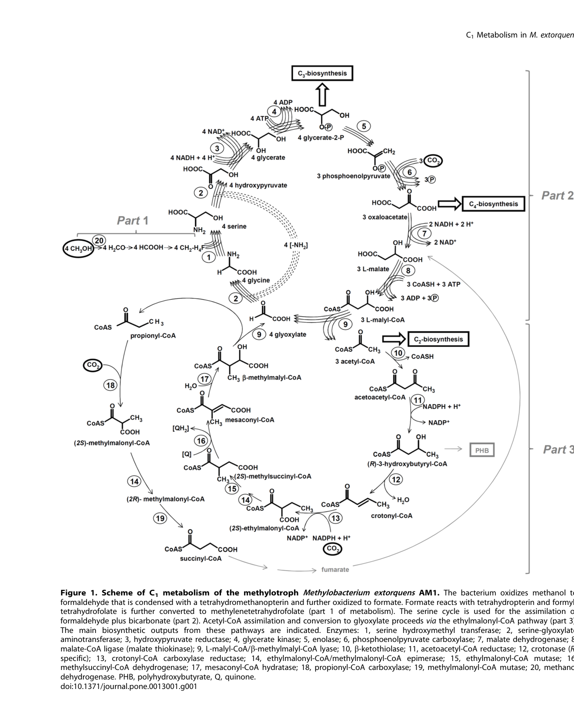

glyA encodes serine hydroxymethyltransferase (SHMT, EC 2.1.2.1), a pyridoxal 5'-phosphate (PLP)-dependent enzyme that catalyzes the reversible interconversion of serine and glycine with tetrahydrofolate (THF). This reaction is crucial for the serine cycle, the central assimilatory pathway in methylotrophy, where it serves as the major source of one-carbon groups required for biosynthesis of purines, thymidylate, methionine, and other biomolecules. The enzyme functions as a homodimer in the cytoplasm. SHMT catalyzes: L-serine + THF ⇌ glycine + 5,10-methylenetetrahydrofolate + H₂O. In methylotrophic metabolism, this enzyme is essential for converting C1 units from formaldehyde oxidation (via the H4MPT pathway) into the tetrahydrofolate pool, where they are used for serine biosynthesis from glycine, completing a key step in the serine cycle. The enzyme also exhibits THF-independent aldolase activity toward β-hydroxyamino acids. Genetic studies (insertional inactivation in M. extorquens AM1) have confirmed glyA is essential for methylotrophic growth: glyA null mutants lose all detectable SHMT activity and cannot grow on C1 compounds (including methanol) even when supplemented with glycine or serine, while still growing normally on succinate. SHMT activity is ~6-fold induced on methanol versus succinate and has been flagged as a potential rate-limiting step in the serine cycle.
| GO Term | Evidence | Action | Reason |
|---|---|---|---|
|
GO:0004372
glycine hydroxymethyltransferase activity
|
IEA
GO_REF:0000120 |
ACCEPT |
Summary: Correct - SHMT catalyzes the reversible PLP-dependent interconversion of serine and glycine with THF as the one-carbon carrier; this is the core molecular function of glyA and is directly supported by organism-specific enzymology in M. extorquens AM1.
Supporting Evidence:
file:METEA/glyA/glyA-deep-research-falcon.md
catalyzes the reversible folate-linked one-carbon transfer between serine and glycine: **L-serine + tetrahydrofolate (THF) ⇄ glycine + 5,10-methylenetetrahydrofolate (5,10-CH2-THF) + H2O**
file:METEA/glyA/glyA-deep-research-falcon.md
Insertional inactivation of **glyA** in AM1 eliminates measurable SHMT activity and causes a strong growth defect on **C1 substrates**
|
|
GO:0005737
cytoplasm
|
IEA
GO_REF:0000120 |
ACCEPT |
Summary: Correct - SHMT is a soluble cytosolic enzyme participating in the serine cycle; no membrane/periplasmic/secretion signal is present and AM1 activity is measured in cell extracts. No direct AM1 localization experiment exists, so this remains an inference from enzymology and conserved bacterial SHMT biology.
Supporting Evidence:
file:METEA/glyA/glyA-deep-research-falcon.md
all evidence places GlyA in intracellular folate/serine-cycle metabolism
|
|
GO:0005829
cytosol
|
IEA
GO_REF:0000118 |
ACCEPT |
Summary: Correct - More specific than cytoplasm; SHMT operates as a soluble enzyme in the cytosolic compartment. As with cytoplasm, this is inferred from enzymology (activity in cell extracts) rather than a direct AM1 localization experiment.
Supporting Evidence:
file:METEA/glyA/glyA-deep-research-falcon.md
soluble cytosolic enzyme
|
|
GO:0006730
one-carbon metabolic process
|
IEA
GO_REF:0000043 |
ACCEPT |
Summary: Correct - SHMT is the central node linking folate-bound one-carbon units to amino acid metabolism in the serine cycle, integrating C1 units derived from methanol/formaldehyde oxidation into biosynthesis.
Supporting Evidence:
file:METEA/glyA/glyA-deep-research-falcon.md
a key link between **folate-linked one-carbon metabolism** and assimilation of formaldehyde derived from methanol oxidation
|
|
GO:0008652
amino acid biosynthetic process
|
IEA
GO_REF:0000043 |
MODIFY |
Summary: Correct but too general - SHMT catalyzes serine/glycine interconversion. A more specific child term, serine family amino acid biosynthetic process (GO:0009070), better captures the enzyme's role; the existing parent term should be kept as non-core.
Reason: The generic amino acid biosynthetic process term is uninformative for an SHMT; the serine family is the relevant subgroup and a more specific term is available.
Proposed replacements:
serine family amino acid biosynthetic process
Supporting Evidence:
file:METEA/glyA/glyA-deep-research-falcon.md
GlyA catalyzing the step that couples a folate-bound C1 unit with glycine to form serine
|
|
GO:0016740
transferase activity
|
IEA
GO_REF:0000043 |
KEEP AS NON CORE |
Summary: Correct but too general - SHMT is a transferase, but the specific term "glycine hydroxymethyltransferase activity" (GO:0004372) is more informative and is already annotated.
|
|
GO:0019264
glycine biosynthetic process from L-serine
|
IEA
GO_REF:0000120 |
ACCEPT |
Summary: Correct - SHMT catalyzes step 1/1 in glycine biosynthesis from L-serine. In the physiological methylotrophic direction in AM1 the reaction runs toward serine formation from glycine + an activated C1 unit, but the enzyme is fully reversible and this term is accurate.
Supporting Evidence:
file:METEA/glyA/glyA-deep-research-falcon.md
GlyA catalyzing the step that couples a folate-bound C1 unit with glycine to form serine
|
|
GO:0030170
pyridoxal phosphate binding
|
IEA
GO_REF:0000120 |
ACCEPT |
Summary: Correct - SHMT is a PLP-dependent enzyme; PLP forms an internal aldimine (Schiff base) with the active-site lysine (Lys242 in this protein), confirmed by conserved SHMT structural studies.
Supporting Evidence:
file:METEA/glyA/glyA-deep-research-falcon.md
PLP forms an internal aldimine (Schiff base) with an active-site lysine
|
|
GO:0035999
tetrahydrofolate interconversion
|
IEA
GO_REF:0000120 |
ACCEPT |
Summary: Correct - SHMT interconverts THF and 5,10-methylenetetrahydrofolate, the defining one-carbon transfer reaction of the serine cycle. In AM1 the physiologically relevant carrier is a polyglutamylated folate, which stimulates the SHMT reaction more strongly than monoglutamyl THF.
Supporting Evidence:
file:METEA/glyA/glyA-deep-research-falcon.md
polyglutamylated THF species stimulate SHMT-catalyzed serine synthesis more strongly than monoglutamyl THF in vitro
|
|
GO:0046653
tetrahydrofolate metabolic process
|
IEA
GO_REF:0000118 |
KEEP AS NON CORE |
Summary: Correct but redundant - More specific term "tetrahydrofolate interconversion" (GO:0035999) captures the same process more precisely.
|
|
GO:0006545
glycine biosynthetic process
|
IEA
GO_REF:0000041 |
KEEP AS NON CORE |
Summary: Correct - SHMT catalyzes glycine biosynthesis from serine; parent term of GO:0019264. Kept as non-core because the more specific GO:0019264 (glycine biosynthetic process from L-serine) is the precise term for this enzyme.
|
The research report should be a detailed narrative explaining the function, biological processes, and localization of the gene product. Citations should be given for all claims.
You should prioritize authoritative reviews and primary scientific literature when conducting research. You can supplement
this with annotations you find in gene/protein databases, but these can be outdated or inaccurate.
We are specifically interested in the primary function of the gene - for enzymes, what reaction is catalyzed, and what is the substrate specificity? For transporters, what is the substrate? For structural proteins or adapters, what is the broader structural role? For signaling molecules, what is the role in the pathway.
We are interested in where in or outside the cell the gene product carries out its function.
We are also interested in the signaling or biochemical pathways in which the gene functions. We are less interested in broad pleiotropic effects, except where these elucidate the precise role.
Include evidence where possible. We are interested in both experimental evidence as well as inference from structure, evolution, or bioinformatic analysis. Precise studies should be prioritized over high-throughput, where available.
Primary literature explicitly identifies glyA in Methylobacterium/Methylorubrum extorquens AM1 as encoding serine hydroxymethyltransferase (SHMT; EC 2.1.2.1), a key enzyme of the serine cycle for C1 assimilation, and reports cloning and insertional inactivation of this exact gene in AM1. (chistoserdova1994geneticsofthe pages 1-2, chistoserdova1994geneticsofthe pages 2-4)
Serine hydroxymethyltransferase (SHMT; GlyA) is a PLP-dependent enzyme that catalyzes the reversible folate-linked one-carbon transfer between serine and glycine: L-serine + tetrahydrofolate (THF) ⇄ glycine + 5,10-methylenetetrahydrofolate (5,10-CH2-THF) + H2O. (drago2023revealingprotonationstates pages 1-2)
In M. extorquens AM1, GlyA is discussed and assayed primarily in the physiological direction relevant to methylotrophy—formation of serine from glycine plus an activated one-carbon unit carried on a folate cofactor—consistent with its role at the entry point of the serine cycle. (smejkalova2010methanolassimilationin pages 5-8)
PLP (pyridoxal-5′-phosphate) is essential for SHMT catalysis; structurally, PLP forms an internal aldimine (Schiff base) with an active-site lysine and is exchanged for substrate during catalysis. (drago2023revealingprotonationstates pages 1-2, drago2023revealingprotonationstates pages 2-4)
A distinctive feature in M. extorquens AM1 is that the physiologically relevant folate pool is not limited to monoglutamyl THF. The organism’s C1 carrier was identified as a polyglutamylated folate (reported as tetrahydropteroyl-tetraglutamate), and polyglutamylated THF species stimulate SHMT-catalyzed serine synthesis more strongly than monoglutamyl THF in vitro. (smejkalova2010methanolassimilationin pages 1-3, smejkalova2010methanolassimilationin pages 5-8, smejkalova2010methanolassimilationin pages 8-9)
High-resolution room-temperature joint X-ray/neutron crystallography of a bacterial SHMT (Thermus thermophilus SHMT; used as a conserved model) directly mapped active-site protonation states. These data support a mechanism in which a conserved active-site glutamate (Glu53 in TthSHMT; analogous to Glu98 in human SHMT2) functions as the general base for key steps in serine retro-aldol chemistry, while active-site histidines are neutral/monoprotonated and less consistent with serving as the catalytic base. (drago2023revealingprotonationstates pages 8-9, drago2023revealingprotonationstates pages 1-2)
A 2024 follow-up using neutron/X-ray structures in complexes with a folate analog (folinic acid) emphasized gating-loop motions (~4–5 Å closure) coupled to folate binding and reinforced a conserved role for the active-site glutamate as an acid–base catalyst across THF-dependent and THF-independent SHMT activities. (drago2024universalityofcritical pages 6-15, drago2024universalityofcritical pages 1-6)
Genomic and pathway analyses describe GlyA as the first enzyme of the serine cycle and a key link between folate-linked one-carbon metabolism and assimilation of formaldehyde derived from methanol oxidation. (chistoserdova2003methylotrophyinmethylobacterium pages 5-6, chistoserdova2003methylotrophyinmethylobacterium pages 6-6)
In the canonical methylotrophic model for AM1, formaldehyde is assimilated via the serine cycle, with GlyA catalyzing the step that couples a folate-bound C1 unit with glycine to form serine—thereby embedding C1 units into central metabolism. (smejkalova2010methanolassimilationin pages 5-8, smejkalova2010methanolassimilationin media 9c2ecf52)
Insertional inactivation of glyA in AM1 eliminates measurable SHMT activity and causes a strong growth defect on C1 substrates (including methanol). Notably, glyA mutants cannot grow on C1 compounds even when supplemented with glycine or serine, consistent with an indispensable role of SHMT/folate-linked C1 transfer for methylotrophic metabolism rather than merely serine supply. (chistoserdova1994geneticsofthe pages 2-4)
In contrast, glyA mutants grow normally on succinate (a multicarbon substrate), indicating glyA is not essential in that condition and supporting specialization of the glyA-encoded SHMT for methylotrophic/serine-cycle function. (chistoserdova1994geneticsofthe pages 2-4)
Carbon-source induction (genetic enzymology): In AM1 wild type, SHMT activity is reported at roughly ~5 nmol·min⁻¹·mg⁻¹ in succinate-grown cells and ~30 nmol·min⁻¹·mg⁻¹ in methanol-grown cells (≈ 6-fold induction). glyA insertion mutants have 0 activity in both conditions; plasmid complementation restores and can elevate activity (e.g., 60–120 nmol·min⁻¹·mg⁻¹, construct-dependent). (chistoserdova1994geneticsofthe pages 2-4)
Systems enzymology (serine-cycle bottleneck analysis): In a comprehensive enzyme-activity survey of methanol assimilation pathways, GlyA displayed comparatively low specific activity in extracts (reported around ~30 mU·mg⁻¹ in standard assays) and was flagged, together with malate thiokinase, as a potential rate-limiting step during methylotrophic growth. (smejkalova2010methanolassimilationin pages 1-3, smejkalova2010methanolassimilationin pages 5-8)
Flux/requirement comparison (“statistics” from the study): Using growth-physiology calculations (generation time ~3 h), the authors estimated a specific carbon fixation demand of ~330 nmol·min⁻¹·mg⁻¹ protein and a minimal benchmark enzyme activity of ~165 nmol·min⁻¹·mg⁻¹ protein; measured GlyA activity was substantially lower, supporting a quantitative argument that GlyA could constrain methylotrophic flux under the tested assay conditions. (smejkalova2010methanolassimilationin pages 5-8, smejkalova2010methanolassimilationin media d532ec28)
Cofactor dependence (polyglutamate effect): Application of isolated native polyglutamylated folate cofactor produced about a two-fold increase in SHMT activity in vitro, implying that assays using monoglutamyl THF may underestimate physiological capacity. (smejkalova2010methanolassimilationin pages 8-9)
No direct subcellular localization experiments (e.g., fractionation, fluorescent tagging) were identified in the retrieved AM1-focused sources. However, GlyA activity was measured in cell extracts and its function is embedded in intracellular folate/serine-cycle metabolism, supporting annotation as a soluble cytosolic enzyme in bacteria. (chistoserdova1994geneticsofthe pages 2-4, smejkalova2010methanolassimilationin pages 5-8)
The 2023 and 2024 neutron/X-ray structural studies are notable because neutron diffraction directly reveals H/D positions and thus protonation states—critical for PLP-enzyme mechanism assignment. These papers support a conserved catalytic strategy centered on an active-site glutamate and characterize conformational gating relevant to folate binding, which can inform inhibitor design and enzyme engineering. (drago2023revealingprotonationstates pages 8-9, drago2024universalityofcritical pages 6-15)
In Methylorubrum extorquens PA1 (a close relative used for ecological physiology), glycine betaine catabolism produces glycine + methylene-THF, which are stated to be utilized by GlyA to produce serine, connecting plant-associated osmolyte catabolism to methylotrophic one-carbon metabolism. This provides a modern example of glyA functioning as a hub at the intersection of glycine handling and folate-linked C1 flux in Methylorubrum. (hying2024glycinebetainemetabolism pages 9-11)
M. extorquens AM1 is widely discussed as an emerging platform organism for methanol-based biomanufacturing, and central enzymes of the serine cycle (including glyA) are therefore key leverage points for improving methylotrophic growth and product formation. (ochsner2015methylobacteriumextorquensmethylotrophy pages 5-6)
Although not AM1-specific, SHMTs are actively explored as biocatalysts for β-hydroxy amino acid synthesis; a 2023 study characterized a thermostable SHMT variant with high-temperature activity and reported kinetic parameters (e.g., Vmax 242 U/mg; Km 23.26 mM; kcat 186 s⁻¹ for a retro-aldol cleavage assay), illustrating industrial interest in SHMT-family enzymes as robust catalysts. (ma’ruf2023characterizationofthermostable pages 1-2)
Rate limitation and cofactor state matter: Šmejkalová et al. emphasized that while many methanol-assimilation enzymes are strongly induced and can exceed minimal capacity requirements, GlyA shows low measured activity and may be limiting; they further argued that native polyglutamylated folates can substantially alter measured activity, implying that cofactor chemistry is integral to interpreting flux control. (smejkalova2010methanolassimilationin pages 1-3, smejkalova2010methanolassimilationin pages 8-9)
Genetic indispensability for methylotrophy: Chistoserdova & Lidstrom’s mutational study provides direct evidence that glyA is required for growth on C1 compounds (methanol), supporting its annotation as a core methylotrophy gene in AM1’s serine cycle. (chistoserdova1994geneticsofthe pages 2-4)
Mechanistic consensus is converging: The 2023–2024 neutron/X-ray papers address long-standing uncertainty in PLP enzyme catalysis by directly measuring protonation states; they propose a conserved glutamate-centric acid–base mechanism and gating-loop control of folate binding, providing a more experimentally grounded framework than earlier purely computational models. (drago2023revealingprotonationstates pages 8-9, drago2024universalityofcritical pages 6-15)
A pathway schematic and activity/constraint figures from M. extorquens AM1 methanol assimilation directly visualize GlyA’s placement in the serine cycle and its potential rate-limiting status in the authors’ analysis. (smejkalova2010methanolassimilationin media 9c2ecf52, smejkalova2010methanolassimilationin media d532ec28)
| Claim/feature | Evidence type | Key quantitative data | Source (first author year journal) and DOI/URL |
|---|---|---|---|
| Target identity: glyA in Methylorubrum extorquens AM1 (formerly Methylobacterium extorquens) encodes serine hydroxymethyltransferase (SHMT; EC 2.1.2.1), a key serine-cycle enzyme | Genetics, comparative sequence | glyA ORF = 1,305 bp; predicted polypeptide ~46.3 kDa; conserved SHMT motif GGHLTHG; reported as single detectable copy in AM1 (chistoserdova1994geneticsofthe pages 1-2, chistoserdova1994geneticsofthe pages 2-2) | Chistoserdova 1994, Journal of Bacteriology. DOI: 10.1128/jb.176.21.6759-6762.1994. URL: https://doi.org/10.1128/jb.176.21.6759-6762.1994 |
| Primary enzymatic function: SHMT catalyzes the reversible conversion between serine + THF and glycine + 5,10-methylene-THF; in AM1 physiological direction is serine formation from glycine + activated C1 unit | Biochemistry, pathway analysis | AM1 assays were performed in the physiological direction (serine formation from glycine + C1 unit); canonical SHMT reaction defined as THF-dependent serine/glycine interconversion (smejkalova2010methanolassimilationin pages 1-3, smejkalova2010methanolassimilationin pages 5-8, drago2023revealingprotonationstates pages 1-2) | Šmejkalová 2010, PLoS ONE. DOI: 10.1371/journal.pone.0013001. URL: https://doi.org/10.1371/journal.pone.0013001; Drago 2023, Communications Chemistry. DOI: 10.1038/s42004-023-00964-9. URL: https://doi.org/10.1038/s42004-023-00964-9 |
| Cofactors and family assignment: SHMT is a PLP-dependent enzyme that also requires a folate co-substrate for C1 transfer | Structure, enzymology | PLP forms an internal aldimine with catalytic Lys in solved SHMT structures; SHMT classified as a PLP-dependent enzyme across bacteria and eukaryotes (drago2023revealingprotonationstates pages 2-4, drago2023revealingprotonationstates pages 1-2, ma’ruf2023characterizationofthermostable pages 1-2) | Drago 2023, Communications Chemistry. DOI: 10.1038/s42004-023-00964-9. URL: https://doi.org/10.1038/s42004-023-00964-9; Ma’ruf 2023, Amino Acids. DOI: 10.1007/s00726-022-03205-w. URL: https://doi.org/10.1007/s00726-022-03205-w |
| Native folate species in AM1: the physiologically relevant C1 carrier is likely a polyglutamylated folate, not simple monoglutamyl THF | Biochemistry | Tetrahydropteroyltriglutamate stimulated serine synthesis more strongly than tetrahydropteroylmonoglutamate; AM1 identified natural C1 carrier as tetrahydropteroyl-tetraglutamate rather than simple THF in whole-pathway analysis (smejkalova2010methanolassimilationin pages 1-3, smejkalova2010methanolassimilationin pages 5-8) | Šmejkalová 2010, PLoS ONE. DOI: 10.1371/journal.pone.0013001. URL: https://doi.org/10.1371/journal.pone.0013001 |
| Pathway role in methylotrophy: GlyA is the first enzyme of the serine cycle and links H4F-linked C1 metabolism to formaldehyde assimilation and biosynthesis | Genetics, genomics, review | Supplies methylene-H4F for biosynthesis (e.g., purines) and participates directly in formaldehyde assimilation through the serine cycle (chistoserdova2003methylotrophyinmethylobacterium pages 5-6, chistoserdova2003methylotrophyinmethylobacterium pages 6-6, ochsner2015methylobacteriumextorquensmethylotrophy pages 5-6, smejkalova2010methanolassimilationin media 9c2ecf52) | Chistoserdova 2003, Journal of Bacteriology. DOI: 10.1128/JB.185.10.2980-2987.2003. URL: https://doi.org/10.1128/jb.185.10.2980-2987.2003; Ochsner 2015, Applied Microbiology and Biotechnology. DOI: 10.1007/s00253-014-6240-3. URL: https://doi.org/10.1007/s00253-014-6240-3 |
| Mutant phenotype: insertional glyA null mutants lose SHMT activity and cannot grow on C1 compounds | Genetics, enzymology | No measurable SHMT activity in glyA mutants; mutants lost ability to grow on C1 compounds, including methanol, even when supplemented with glycine or serine (chistoserdova1994geneticsofthe pages 2-4, chistoserdova1994geneticsofthe pages 2-2) | Chistoserdova 1994, Journal of Bacteriology. DOI: 10.1128/jb.176.21.6759-6762.1994. URL: https://doi.org/10.1128/jb.176.21.6759-6762.1994 |
| Growth substrate specificity: glyA is not required for succinate growth, but is required for methylotrophy and contributes to C2 metabolism | Genetics | glyA mutants grew normally on succinate; one report states mutant lost ability to grow on C1 as well as C2 compounds but still grew on succinate; glyoxylate chemically rescued some C2-growth defects (chistoserdova1994geneticsofthe pages 1-2, chistoserdova1994geneticsofthe pages 4-4, chistoserdova1994geneticsofthe pages 2-4) | Chistoserdova 1994, Journal of Bacteriology. DOI: 10.1128/jb.176.21.6759-6762.1994. URL: https://doi.org/10.1128/jb.176.21.6759-6762.1994 |
| Chemical complementation insight: glyoxylate can rescue growth on some C2 substrates but not methanol, implying a direct indispensable role for GlyA in C1 assimilation beyond glyoxylate supply | Genetics, physiology | 2–10 mM glyoxylate supported growth on ethanol or ethylamine, but up to 10 mM glyoxylate did not restore growth on methanol (chistoserdova1994geneticsofthe pages 4-4, chistoserdova1994geneticsofthe pages 2-4) | Chistoserdova 1994, Journal of Bacteriology. DOI: 10.1128/jb.176.21.6759-6762.1994. URL: https://doi.org/10.1128/jb.176.21.6759-6762.1994 |
| Potential flux bottleneck / rate-limiting step during methylotrophic growth | Biochemistry, systems analysis | Measured maximal GlyA activity ~30 mU mg⁻¹ (≈ 30 nmol min⁻¹ mg⁻¹); calculated minimum needed for observed methanol-growth flux ~165 nmol min⁻¹ mg⁻¹; estimated specific carbon-fixation demand ~330 nmol min⁻¹ mg⁻¹ protein; measured activity therefore far below theoretical minimum (smejkalova2010methanolassimilationin pages 5-8, smejkalova2010methanolassimilationin media d532ec28) | Šmejkalová 2010, PLoS ONE. DOI: 10.1371/journal.pone.0013001. URL: https://doi.org/10.1371/journal.pone.0013001 |
| Metabolite evidence for bottleneck: elevated upstream intermediates are consistent with limited GlyA flux | Biochemistry, metabolomics interpretation | Reported intracellular glyoxylate and glycine >0.10 mM, consistent with buildup upstream of GlyA and with GlyA as a candidate control point (smejkalova2010methanolassimilationin pages 5-8) | Šmejkalová 2010, PLoS ONE. DOI: 10.1371/journal.pone.0013001. URL: https://doi.org/10.1371/journal.pone.0013001 |
| Regulation by carbon source: serine-cycle enzymes including GlyA are induced on methanol and down-regulated on nonrequired substrates | Biochemistry, proteomics, systems biology | Whole-pathway enzyme assays showed strict differential regulation depending on growth substrate; Figure-based summary indicates strong induction of serine-cycle enzymes on methanol (smejkalova2010methanolassimilationin pages 1-3, smejkalova2010methanolassimilationin media 9c2ecf52, smejkalova2010methanolassimilationin media eb719dd8) | Šmejkalová 2010, PLoS ONE. DOI: 10.1371/journal.pone.0013001. URL: https://doi.org/10.1371/journal.pone.0013001; Laukel 2004, PROTEOMICS. DOI: 10.1002/pmic.200300713. URL: https://doi.org/10.1002/pmic.200300713 |
| Proteomic support for pathway assignment: GlyA is detected as part of the methylotrophy-associated serine-cycle network | Proteomics | Proteome comparisons identified serine-cycle enzymes and explicitly note serine hydroxymethyltransferase (GlyA) among pathway components; GlyA is not genomically clustered with all serine-cycle genes (chistoserdova2003methylotrophyinmethylobacterium pages 5-6) | Laukel 2004, PROTEOMICS. DOI: 10.1002/pmic.200300713. URL: https://doi.org/10.1002/pmic.200300713; Chistoserdova 2003, Journal of Bacteriology. DOI: 10.1128/JB.185.10.2980-2987.2003. URL: https://doi.org/10.1128/jb.185.10.2980-2987.2003 |
| Role beyond methanol assimilation: GlyA also intersects with glycine-generating pathways and broader one-carbon metabolism in related Methylorubrum physiology | Physiology, pathway genetics | In M. extorquens PA1 glycine betaine catabolism yields glycine + methylene-THF, which are stated to be used by GlyA to make serine, linking glycine handling to central metabolism (hying2024glycinebetainemetabolism pages 9-11) | Hying 2024, Applied and Environmental Microbiology. DOI: 10.1128/aem.02090-23. URL: https://doi.org/10.1128/aem.02090-23 |
| Recent mechanistic update (2023): catalytic base assignment | Structure, neutron/X-ray crystallography | Room-temperature joint neutron/X-ray structures support Glu53 in bacterial TthSHMT (analogous Glu98 in hSHMT2) as the general base, rather than His residues, for serine retro-aldol chemistry (drago2023revealingprotonationstates pages 2-4, drago2023revealingprotonationstates pages 1-2, drago2023revealingprotonationstates pages 8-9) | Drago 2023, Communications Chemistry. DOI: 10.1038/s42004-023-00964-9. URL: https://doi.org/10.1038/s42004-023-00964-9 |
| Recent mechanistic update (2023): protonation states | Structure, neutron crystallography | Direct H/D visualization showed PLP pyridine N1 protonated, phenolic O3′ deprotonated, Schiff-base N non-protonated; active-site histidines were neutral/monoprotonated, arguing against His as catalytic base (drago2023revealingprotonationstates pages 2-4, drago2023revealingprotonationstates pages 8-9) | Drago 2023, Communications Chemistry. DOI: 10.1038/s42004-023-00964-9. URL: https://doi.org/10.1038/s42004-023-00964-9 |
| Recent mechanistic update (2024): folate binding and gating loop | Structure | Folate analog binding induced ~4–5 Å gating-loop closure and adjacent rearrangements; structures support a universal role for the conserved active-site glutamate in acid–base catalysis and show folate-pocket geometry relevant to substrate/cofactor access (drago2024universalityofcritical pages 6-15, drago2024universalityofcritical pages 1-6) | Drago 2024, Chemical Science. DOI: 10.1039/d4sc03187c. URL: https://doi.org/10.1039/d4sc03187c |
| Localization / compartmentation inference: no evidence for secretion or membrane localization; function is consistent with a soluble cytosolic metabolic enzyme | Inference from pathway biochemistry, assays | Activity measured in cell extracts; all evidence places GlyA in intracellular folate/serine-cycle metabolism; no periplasmic, membrane, or extracellular localization data were identified in the retrieved AM1 literature (smejkalova2010methanolassimilationin pages 1-3, chistoserdova1994geneticsofthe pages 2-4) | Šmejkalová 2010, PLoS ONE. DOI: 10.1371/journal.pone.0013001. URL: https://doi.org/10.1371/journal.pone.0013001; Chistoserdova 1994, Journal of Bacteriology. DOI: 10.1128/jb.176.21.6759-6762.1994. URL: https://doi.org/10.1128/jb.176.21.6759-6762.1994 |
Table: This table summarizes the main functional-annotation claims for glyA/SHMT (UniProt P50435) in Methylorubrum extorquens AM1, integrating organism-specific genetics and biochemistry with recent 2023-2024 structural mechanism studies.
References
(chistoserdova1994geneticsofthe pages 1-2): L V Chistoserdova and M E Lidstrom. Genetics of the serine cycle in methylobacterium extorquens am1: cloning, sequence, mutation, and physiological effect of glya, the gene for serine hydroxymethyltransferase. Journal of Bacteriology, 176:6759-6762, Nov 1994. URL: https://doi.org/10.1128/jb.176.21.6759-6762.1994, doi:10.1128/jb.176.21.6759-6762.1994. This article has 43 citations and is from a peer-reviewed journal.
(chistoserdova1994geneticsofthe pages 2-4): L V Chistoserdova and M E Lidstrom. Genetics of the serine cycle in methylobacterium extorquens am1: cloning, sequence, mutation, and physiological effect of glya, the gene for serine hydroxymethyltransferase. Journal of Bacteriology, 176:6759-6762, Nov 1994. URL: https://doi.org/10.1128/jb.176.21.6759-6762.1994, doi:10.1128/jb.176.21.6759-6762.1994. This article has 43 citations and is from a peer-reviewed journal.
(drago2023revealingprotonationstates pages 1-2): Victoria N. Drago, Claudia Campos, Mattea Hooper, Aliyah Collins, Oksana Gerlits, Kevin L. Weiss, Matthew P. Blakeley, Robert S. Phillips, and Andrey Kovalevsky. Revealing protonation states and tracking substrate in serine hydroxymethyltransferase with room-temperature x-ray and neutron crystallography. Communications Chemistry, Aug 2023. URL: https://doi.org/10.1038/s42004-023-00964-9, doi:10.1038/s42004-023-00964-9. This article has 10 citations and is from a peer-reviewed journal.
(smejkalova2010methanolassimilationin pages 5-8): Hana Šmejkalová, Tobias J. Erb, and Georg Fuchs. Methanol assimilation in methylobacterium extorquens am1: demonstration of all enzymes and their regulation. PLoS ONE, 5:e13001, Oct 2010. URL: https://doi.org/10.1371/journal.pone.0013001, doi:10.1371/journal.pone.0013001. This article has 172 citations and is from a peer-reviewed journal.
(drago2023revealingprotonationstates pages 2-4): Victoria N. Drago, Claudia Campos, Mattea Hooper, Aliyah Collins, Oksana Gerlits, Kevin L. Weiss, Matthew P. Blakeley, Robert S. Phillips, and Andrey Kovalevsky. Revealing protonation states and tracking substrate in serine hydroxymethyltransferase with room-temperature x-ray and neutron crystallography. Communications Chemistry, Aug 2023. URL: https://doi.org/10.1038/s42004-023-00964-9, doi:10.1038/s42004-023-00964-9. This article has 10 citations and is from a peer-reviewed journal.
(smejkalova2010methanolassimilationin pages 1-3): Hana Šmejkalová, Tobias J. Erb, and Georg Fuchs. Methanol assimilation in methylobacterium extorquens am1: demonstration of all enzymes and their regulation. PLoS ONE, 5:e13001, Oct 2010. URL: https://doi.org/10.1371/journal.pone.0013001, doi:10.1371/journal.pone.0013001. This article has 172 citations and is from a peer-reviewed journal.
(smejkalova2010methanolassimilationin pages 8-9): Hana Šmejkalová, Tobias J. Erb, and Georg Fuchs. Methanol assimilation in methylobacterium extorquens am1: demonstration of all enzymes and their regulation. PLoS ONE, 5:e13001, Oct 2010. URL: https://doi.org/10.1371/journal.pone.0013001, doi:10.1371/journal.pone.0013001. This article has 172 citations and is from a peer-reviewed journal.
(drago2023revealingprotonationstates pages 8-9): Victoria N. Drago, Claudia Campos, Mattea Hooper, Aliyah Collins, Oksana Gerlits, Kevin L. Weiss, Matthew P. Blakeley, Robert S. Phillips, and Andrey Kovalevsky. Revealing protonation states and tracking substrate in serine hydroxymethyltransferase with room-temperature x-ray and neutron crystallography. Communications Chemistry, Aug 2023. URL: https://doi.org/10.1038/s42004-023-00964-9, doi:10.1038/s42004-023-00964-9. This article has 10 citations and is from a peer-reviewed journal.
(drago2024universalityofcritical pages 6-15): Victoria N. Drago, Robert S. Phillips, and Andrey Kovalevsky. Universality of critical active site glutamate as an acid–base catalyst in serine hydroxymethyltransferase function. Chemical Science, 15:12827-12844, Jul 2024. URL: https://doi.org/10.1039/d4sc03187c, doi:10.1039/d4sc03187c. This article has 10 citations and is from a highest quality peer-reviewed journal.
(drago2024universalityofcritical pages 1-6): Victoria N. Drago, Robert S. Phillips, and Andrey Kovalevsky. Universality of critical active site glutamate as an acid–base catalyst in serine hydroxymethyltransferase function. Chemical Science, 15:12827-12844, Jul 2024. URL: https://doi.org/10.1039/d4sc03187c, doi:10.1039/d4sc03187c. This article has 10 citations and is from a highest quality peer-reviewed journal.
(chistoserdova2003methylotrophyinmethylobacterium pages 5-6): Ludmila Chistoserdova, Sung-Wei Chen, Alla Lapidus, and Mary E. Lidstrom. Methylotrophy in methylobacterium extorquens am1 from a genomic point of view. Journal of Bacteriology, 185:2980-2987, May 2003. URL: https://doi.org/10.1128/jb.185.10.2980-2987.2003, doi:10.1128/jb.185.10.2980-2987.2003. This article has 237 citations and is from a peer-reviewed journal.
(chistoserdova2003methylotrophyinmethylobacterium pages 6-6): Ludmila Chistoserdova, Sung-Wei Chen, Alla Lapidus, and Mary E. Lidstrom. Methylotrophy in methylobacterium extorquens am1 from a genomic point of view. Journal of Bacteriology, 185:2980-2987, May 2003. URL: https://doi.org/10.1128/jb.185.10.2980-2987.2003, doi:10.1128/jb.185.10.2980-2987.2003. This article has 237 citations and is from a peer-reviewed journal.
(smejkalova2010methanolassimilationin media 9c2ecf52): Hana Šmejkalová, Tobias J. Erb, and Georg Fuchs. Methanol assimilation in methylobacterium extorquens am1: demonstration of all enzymes and their regulation. PLoS ONE, 5:e13001, Oct 2010. URL: https://doi.org/10.1371/journal.pone.0013001, doi:10.1371/journal.pone.0013001. This article has 172 citations and is from a peer-reviewed journal.
(smejkalova2010methanolassimilationin media d532ec28): Hana Šmejkalová, Tobias J. Erb, and Georg Fuchs. Methanol assimilation in methylobacterium extorquens am1: demonstration of all enzymes and their regulation. PLoS ONE, 5:e13001, Oct 2010. URL: https://doi.org/10.1371/journal.pone.0013001, doi:10.1371/journal.pone.0013001. This article has 172 citations and is from a peer-reviewed journal.
(hying2024glycinebetainemetabolism pages 9-11): Zachary T. Hying, Tyler J. Miller, Chin Yi Loh, and Jannell V. Bazurto. Glycine betaine metabolism is enabled in methylorubrum extorquens pa1 by alterations to dimethylglycine dehydrogenase. Applied and Environmental Microbiology, Jul 2024. URL: https://doi.org/10.1128/aem.02090-23, doi:10.1128/aem.02090-23. This article has 6 citations and is from a peer-reviewed journal.
(ochsner2015methylobacteriumextorquensmethylotrophy pages 5-6): Andrea M. Ochsner, Frank Sonntag, Markus Buchhaupt, Jens Schrader, and Julia A. Vorholt. Methylobacterium extorquens: methylotrophy and biotechnological applications. Applied Microbiology and Biotechnology, 99:517-534, Nov 2015. URL: https://doi.org/10.1007/s00253-014-6240-3, doi:10.1007/s00253-014-6240-3. This article has 229 citations and is from a domain leading peer-reviewed journal.
(ma’ruf2023characterizationofthermostable pages 1-2): Ilma Fauziah Ma’ruf, Elvi Restiawaty, Syifa Fakhomah Syihab, Kohsuke Honda, and Akhmaloka. Characterization of thermostable serine hydroxymethyltransferase for β-hydroxy amino acids synthesis. Amino Acids, 55:75-88, Dec 2023. URL: https://doi.org/10.1007/s00726-022-03205-w, doi:10.1007/s00726-022-03205-w. This article has 3 citations and is from a peer-reviewed journal.
(chistoserdova1994geneticsofthe pages 2-2): L V Chistoserdova and M E Lidstrom. Genetics of the serine cycle in methylobacterium extorquens am1: cloning, sequence, mutation, and physiological effect of glya, the gene for serine hydroxymethyltransferase. Journal of Bacteriology, 176:6759-6762, Nov 1994. URL: https://doi.org/10.1128/jb.176.21.6759-6762.1994, doi:10.1128/jb.176.21.6759-6762.1994. This article has 43 citations and is from a peer-reviewed journal.
(chistoserdova1994geneticsofthe pages 4-4): L V Chistoserdova and M E Lidstrom. Genetics of the serine cycle in methylobacterium extorquens am1: cloning, sequence, mutation, and physiological effect of glya, the gene for serine hydroxymethyltransferase. Journal of Bacteriology, 176:6759-6762, Nov 1994. URL: https://doi.org/10.1128/jb.176.21.6759-6762.1994, doi:10.1128/jb.176.21.6759-6762.1994. This article has 43 citations and is from a peer-reviewed journal.
(smejkalova2010methanolassimilationin media eb719dd8): Hana Šmejkalová, Tobias J. Erb, and Georg Fuchs. Methanol assimilation in methylobacterium extorquens am1: demonstration of all enzymes and their regulation. PLoS ONE, 5:e13001, Oct 2010. URL: https://doi.org/10.1371/journal.pone.0013001, doi:10.1371/journal.pone.0013001. This article has 172 citations and is from a peer-reviewed journal.

id: P50435
gene_symbol: glyA
product_type: PROTEIN
taxon:
id: NCBITaxon:272630
label: Methylorubrum extorquens AM1
description: "glyA encodes serine hydroxymethyltransferase (SHMT, EC 2.1.2.1), a pyridoxal 5'-phosphate (PLP)-dependent enzyme that catalyzes the reversible interconversion of serine and glycine with tetrahydrofolate (THF). This reaction is crucial for the serine cycle, the central assimilatory pathway in methylotrophy, where it serves as the major source of one-carbon groups required for biosynthesis of purines, thymidylate, methionine, and other biomolecules. The enzyme functions as a homodimer in the cytoplasm. SHMT catalyzes: L-serine + THF ⇌ glycine + 5,10-methylenetetrahydrofolate + H₂O. In methylotrophic metabolism, this enzyme is essential for converting C1 units from formaldehyde oxidation (via the H4MPT pathway) into the tetrahydrofolate pool, where they are used for serine biosynthesis from glycine, completing a key step in the serine cycle. The enzyme also exhibits THF-independent aldolase activity toward β-hydroxyamino acids. Genetic studies (insertional inactivation in M. extorquens AM1) have confirmed glyA is essential\
\ for methylotrophic growth: glyA null mutants lose all detectable SHMT activity and cannot grow on C1 compounds (including methanol) even when supplemented with glycine or serine, while still growing normally on succinate. SHMT activity is ~6-fold induced on methanol versus succinate and has been flagged as a potential rate-limiting step in the serine cycle."
existing_annotations:
- term:
id: GO:0004372
label: glycine hydroxymethyltransferase activity
evidence_type: IEA
original_reference_id: GO_REF:0000120
review:
summary: Correct - SHMT catalyzes the reversible PLP-dependent interconversion of serine and glycine with THF as the one-carbon carrier; this is the core molecular function of glyA and is directly supported by organism-specific enzymology in M. extorquens AM1.
action: ACCEPT
supported_by:
- reference_id: file:METEA/glyA/glyA-deep-research-falcon.md
supporting_text: 'catalyzes the reversible folate-linked one-carbon transfer between serine and glycine: **L-serine + tetrahydrofolate (THF) ⇄ glycine + 5,10-methylenetetrahydrofolate (5,10-CH2-THF) + H2O**'
reference_section_type: RESULTS
- reference_id: file:METEA/glyA/glyA-deep-research-falcon.md
supporting_text: 'Insertional inactivation of **glyA** in AM1 eliminates measurable SHMT activity and causes a strong growth defect on **C1 substrates**'
reference_section_type: RESULTS
- term:
id: GO:0005737
label: cytoplasm
evidence_type: IEA
original_reference_id: GO_REF:0000120
review:
summary: 'Correct - SHMT is a soluble cytosolic enzyme participating in the serine cycle; no membrane/periplasmic/secretion signal is present and AM1 activity is measured in cell extracts. No direct AM1 localization experiment exists, so this remains an inference from enzymology and conserved bacterial SHMT biology.'
action: ACCEPT
supported_by:
- reference_id: file:METEA/glyA/glyA-deep-research-falcon.md
supporting_text: all evidence places GlyA in intracellular folate/serine-cycle metabolism
reference_section_type: DISCUSSION
- term:
id: GO:0005829
label: cytosol
evidence_type: IEA
original_reference_id: GO_REF:0000118
review:
summary: Correct - More specific than cytoplasm; SHMT operates as a soluble enzyme in the cytosolic compartment. As with cytoplasm, this is inferred from enzymology (activity in cell extracts) rather than a direct AM1 localization experiment.
action: ACCEPT
supported_by:
- reference_id: file:METEA/glyA/glyA-deep-research-falcon.md
supporting_text: soluble cytosolic enzyme
reference_section_type: RESULTS
- term:
id: GO:0006730
label: one-carbon metabolic process
evidence_type: IEA
original_reference_id: GO_REF:0000043
review:
summary: Correct - SHMT is the central node linking folate-bound one-carbon units to amino acid metabolism in the serine cycle, integrating C1 units derived from methanol/formaldehyde oxidation into biosynthesis.
action: ACCEPT
supported_by:
- reference_id: file:METEA/glyA/glyA-deep-research-falcon.md
supporting_text: a key link between **folate-linked one-carbon metabolism** and assimilation of formaldehyde derived from methanol oxidation
reference_section_type: RESULTS
- term:
id: GO:0008652
label: amino acid biosynthetic process
evidence_type: IEA
original_reference_id: GO_REF:0000043
review:
summary: Correct but too general - SHMT catalyzes serine/glycine interconversion. A more specific child term, serine family amino acid biosynthetic process (GO:0009070), better captures the enzyme's role; the existing parent term should be kept as non-core.
action: MODIFY
reason: The generic amino acid biosynthetic process term is uninformative for an SHMT; the serine family is the relevant subgroup and a more specific term is available.
proposed_replacement_terms:
- id: GO:0009070
label: serine family amino acid biosynthetic process
supported_by:
- reference_id: file:METEA/glyA/glyA-deep-research-falcon.md
supporting_text: GlyA catalyzing the step that couples a folate-bound C1 unit with glycine to form serine
reference_section_type: RESULTS
- term:
id: GO:0016740
label: transferase activity
evidence_type: IEA
original_reference_id: GO_REF:0000043
review:
summary: Correct but too general - SHMT is a transferase, but the specific term "glycine hydroxymethyltransferase activity" (GO:0004372) is more informative and is already annotated.
action: KEEP_AS_NON_CORE
- term:
id: GO:0019264
label: glycine biosynthetic process from L-serine
evidence_type: IEA
original_reference_id: GO_REF:0000120
review:
summary: 'Correct - SHMT catalyzes step 1/1 in glycine biosynthesis from L-serine. In the physiological methylotrophic direction in AM1 the reaction runs toward serine formation from glycine + an activated C1 unit, but the enzyme is fully reversible and this term is accurate.'
action: ACCEPT
supported_by:
- reference_id: file:METEA/glyA/glyA-deep-research-falcon.md
supporting_text: GlyA catalyzing the step that couples a folate-bound C1 unit with glycine to form serine
reference_section_type: RESULTS
- term:
id: GO:0030170
label: pyridoxal phosphate binding
evidence_type: IEA
original_reference_id: GO_REF:0000120
review:
summary: 'Correct - SHMT is a PLP-dependent enzyme; PLP forms an internal aldimine (Schiff base) with the active-site lysine (Lys242 in this protein), confirmed by conserved SHMT structural studies.'
action: ACCEPT
supported_by:
- reference_id: file:METEA/glyA/glyA-deep-research-falcon.md
supporting_text: PLP forms an internal aldimine (Schiff base) with an active-site lysine
reference_section_type: RESULTS
- term:
id: GO:0035999
label: tetrahydrofolate interconversion
evidence_type: IEA
original_reference_id: GO_REF:0000120
review:
summary: 'Correct - SHMT interconverts THF and 5,10-methylenetetrahydrofolate, the defining one-carbon transfer reaction of the serine cycle. In AM1 the physiologically relevant carrier is a polyglutamylated folate, which stimulates the SHMT reaction more strongly than monoglutamyl THF.'
action: ACCEPT
supported_by:
- reference_id: file:METEA/glyA/glyA-deep-research-falcon.md
supporting_text: polyglutamylated THF species stimulate SHMT-catalyzed serine synthesis more strongly than monoglutamyl THF in vitro
reference_section_type: RESULTS
- term:
id: GO:0046653
label: tetrahydrofolate metabolic process
evidence_type: IEA
original_reference_id: GO_REF:0000118
review:
summary: Correct but redundant - More specific term "tetrahydrofolate interconversion" (GO:0035999) captures the same process more precisely.
action: KEEP_AS_NON_CORE
- term:
id: GO:0006545
label: glycine biosynthetic process
evidence_type: IEA
original_reference_id: GO_REF:0000041
review:
summary: 'Correct - SHMT catalyzes glycine biosynthesis from serine; parent term of GO:0019264. Kept as non-core because the more specific GO:0019264 (glycine biosynthetic process from L-serine) is the precise term for this enzyme.'
action: KEEP_AS_NON_CORE
core_functions:
- description: "GlyA catalyzes the reversible, pyridoxal 5'-phosphate (PLP)-dependent interconversion of L-serine and glycine with tetrahydrofolate (THF) serving as the one-carbon carrier, producing 5,10-methylenetetrahydrofolate. This enzyme is a central node of the serine cycle in methylotrophic metabolism, where it integrates C1 units from formaldehyde oxidation into cellular biosynthesis and is the first enzyme of the serine cycle. The reaction provides the major source of one-carbon units required for synthesis of purines, thymidylate, methionine, and other biomolecules. GlyA functions as a homodimer in the cytoplasm and is essential for methylotrophic growth: glyA null mutants lose all SHMT activity and cannot grow on C1 compounds (including methanol) even with glycine or serine supplementation, while growth on succinate is unaffected. The enzyme also exhibits THF-independent aldolase activity toward β-hydroxyamino acids via a retro-aldol mechanism."
molecular_function:
id: GO:0004372
label: glycine hydroxymethyltransferase activity
directly_involved_in:
- id: GO:0035999
label: tetrahydrofolate interconversion
- id: GO:0006730
label: one-carbon metabolic process
- id: GO:0019264
label: glycine biosynthetic process from L-serine
locations:
- id: GO:0005737
label: cytoplasm
- id: GO:0005829
label: cytosol
supported_by:
- reference_id: file:METEA/glyA/glyA-uniprot.txt
supporting_text: 'Catalyzes the reversible interconversion of serine and glycine with tetrahydrofolate (THF) serving as the one-carbon carrier...COFACTOR: Name=pyridoxal 5''-phosphate...Homodimer...Cytoplasm...Genetics of the serine cycle in Methylobacterium extorquens AM1'
- reference_id: file:METEA/glyA/glyA-deep-research-falcon.md
supporting_text: 'catalyzes the reversible folate-linked one-carbon transfer between serine and glycine: **L-serine + tetrahydrofolate (THF) ⇄ glycine + 5,10-methylenetetrahydrofolate (5,10-CH2-THF) + H2O**'
- reference_id: file:METEA/glyA/glyA-deep-research-falcon.md
supporting_text: GlyA is the **first enzyme of the serine cycle**
- reference_id: file:METEA/glyA/glyA-deep-research-falcon.md
supporting_text: glyA mutants cannot grow on C1 compounds even when supplemented with glycine or serine
references:
- id: file:METEA/glyA/glyA-uniprot.txt
title: UniProt entry for glyA serine hydroxymethyltransferase
findings: []
- id: file:METEA/glyA/glyA-deep-research-falcon.md
title: Falcon deep research report on glyA (P50435) serine hydroxymethyltransferase in Methylorubrum extorquens AM1
findings:
- statement: Primary literature confirms glyA in M. extorquens AM1 encodes serine hydroxymethyltransferase (SHMT, EC 2.1.2.1), a key serine-cycle enzyme; the cloning and insertional inactivation of this exact gene were reported in AM1.
supporting_text: encodes **serine hydroxymethyltransferase (SHMT; EC 2.1.2.1)**
reference_section_type: RESULTS
- statement: SHMT catalyzes the reversible folate-linked one-carbon transfer between serine and glycine, the defining reaction of the enzyme.
supporting_text: 'catalyzes the reversible folate-linked one-carbon transfer between serine and glycine: **L-serine + tetrahydrofolate (THF) ⇄ glycine + 5,10-methylenetetrahydrofolate (5,10-CH2-THF) + H2O**'
reference_section_type: RESULTS
- statement: SHMT is a PLP-dependent enzyme; PLP forms an internal aldimine (Schiff base) with an active-site lysine.
supporting_text: PLP forms an internal aldimine (Schiff base) with an active-site lysine
reference_section_type: RESULTS
- statement: GlyA is described as the first enzyme of the serine cycle and a key link between folate-linked one-carbon metabolism and assimilation of formaldehyde derived from methanol oxidation.
supporting_text: a key link between **folate-linked one-carbon metabolism** and assimilation of formaldehyde derived from methanol oxidation
reference_section_type: RESULTS
- statement: Insertional inactivation of glyA in AM1 eliminates measurable SHMT activity and causes a strong growth defect on C1 substrates.
supporting_text: 'Insertional inactivation of **glyA** in AM1 eliminates measurable SHMT activity and causes a strong growth defect on **C1 substrates**'
reference_section_type: RESULTS
- statement: glyA mutants cannot grow on C1 compounds even when supplemented with glycine or serine, indicating an indispensable role for SHMT/folate-linked C1 transfer rather than merely serine supply.
supporting_text: glyA mutants cannot grow on C1 compounds even when supplemented with glycine or serine
reference_section_type: RESULTS
- statement: glyA mutants grow normally on succinate, showing glyA is not required for multicarbon growth and is specialized for methylotrophic/serine-cycle function.
supporting_text: glyA mutants grow normally on **succinate**
reference_section_type: RESULTS
- statement: In AM1 the physiologically relevant folate carrier is polyglutamylated, and polyglutamylated THF species stimulate SHMT-catalyzed serine synthesis more strongly than monoglutamyl THF in vitro.
supporting_text: polyglutamylated THF species stimulate SHMT-catalyzed serine synthesis more strongly than monoglutamyl THF in vitro
reference_section_type: RESULTS
- statement: GlyA shows comparatively low measured specific activity and was flagged as a potential rate-limiting step during methylotrophic growth.
supporting_text: potential **rate-limiting** step during methylotrophic growth
reference_section_type: DISCUSSION
- statement: All retrieved evidence places GlyA in intracellular folate/serine-cycle metabolism, consistent with a soluble cytosolic enzyme; no periplasmic, membrane, or extracellular localization data were found.
supporting_text: all evidence places GlyA in intracellular folate/serine-cycle metabolism
reference_section_type: DISCUSSION
- statement: In M. extorquens PA1, glycine betaine catabolism yields glycine and methylene-THF that GlyA uses to make serine, linking glycine handling to central one-carbon metabolism in Methylorubrum.
supporting_text: glycine betaine catabolism produces **glycine + methylene-THF**, which are stated to be utilized by **GlyA to produce serine**
reference_section_type: RESULTS
- statement: Recent neutron/X-ray structural work supports a mechanism with a conserved active-site glutamate as general base for serine retro-aldol chemistry.
supporting_text: support a mechanism in which a conserved **active-site glutamate
reference_section_type: RESULTS
- id: GO_REF:0000041
title: Gene Ontology annotation based on UniPathway vocabulary mapping.
findings: []
- id: GO_REF:0000043
title: Gene Ontology annotation based on UniProtKB/Swiss-Prot keyword mapping
findings: []
- id: GO_REF:0000118
title: TreeGrafter-generated GO annotations
findings: []
- id: GO_REF:0000120
title: Combined Automated Annotation using Multiple IEA Methods.
findings: []
status: COMPLETE
tags:
- metea
{kind=link}